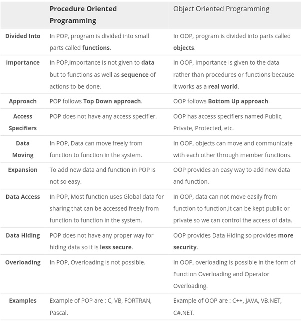

UNIT 1:Introduction To Java
What is java?
JAVA was developed by Sun Microsystems Inc in 1991, later acquired by Oracle Corporation. It was developed by James Gosling and Patrick Naughton. It is a simple programming language. Writing, compiling and debugging a program is easy in java. It helps to create modular programs and reusable code.
Java is a simple, object oriented, distributed, compiled/interpreted, robust, secure, architecutre neutral, portable, high perfomance, multithreaded and dynamic language.
Features of Java:
The prime reason behind creation of Java was to bring portability and security feature into a computer language. Beside these two major features, there were many other features that played an important role in moulding out the final form of this outstanding language. Those features are :
Simple
Java is easy to learn and its syntax is quite simple, clean and easy to understand.The confusing and ambiguous concepts of C++ are either left out in Java or they have been re-implemented in a cleaner way.
Eg : Pointers and Operator Overloading are not there in java but were an important part of C++.
Object Oriented
In java everything is Object which has some data and behaviour. Java can be easily extended as it is based on Object Model.
Robust
Java makes an effort to eliminate error prone codes by emphasizing mainly on compile time error checking and runtime checking. But the main areas which Java improved were Memory Management and mishandled Exceptions by introducing automatic Garbage Collector and Exception Handling.
Platform Independent
Unlike other programming languages such as C, C++ etc which are compiled into platform specific machines. Java is guaranteed to be write-once, run-anywhere language.Java is platform Independent Language
Secure
When it comes to security, Java is always the first choice. With java secure features it enable us to develop virus free, temper free system. Java program always runs in Java runtime environment with almost null interaction with system OS, hence it is more secure.
Multi Threading
Java multithreading feature makes it possible to write program that can do many tasks simultaneously. Benefit of multithreading is that it utilizes same memory and other resources to execute multiple threads at the same time, like While typing, grammatical errors are checked along.
Architectural Neutral
Compiler generates bytecodes, which have nothing to do with a particular computer architecture, hence a Java program is easy to intrepret on any machine.
Portable
Java Byte code can be carried to any platform. No implementation dependent features. Everything related to storage is predefined, example: size of primitive data types.
High Performance
Java is an interpreted language, so it will never be as fast as a compiled language like C or C++. But, Java enables high performance with the use of just-in-time compiler.
History of Java:
Java was started as a project called "Oak" by James Gosling in June 1991. Gosling's goals were to implement a virtual machine and a language that had a familiar C-like notation but with greater uniformity and simplicity than C/C++. The first public implementation was Java 1.0 in 1995. It made the promise of "Write Once, Run Anywhere", with free runtimes on popular platforms. It was fairly secure and its security was configurable, allowing for network and file access to be limited. The major web browsers soon incorporated it into their standard configurations in a secure "applet" configuration. popular quickly. New versions for large and small platforms (J2EE and J2ME) soon were designed with the advent of "Java 2". Sun has not announced any plans for a "Java 3".
In 1997, Sun approached the ISO/IEC JTC1 standards body and later the Ecma International to formalize Java, but it soon withdrew from the process. Java remains a proprietary de facto standard that is controlled through the Java Community Process. Sun makes most of its Java implementations available without charge, with revenue being generated by specialized products such as the Java Enterprise System. Sun distinguishes between its Software Development Kit (SDK) and Runtime Environment (JRE) which is a subset of the SDK, the primary distinction being that in the JRE the compiler is not present.
The Internet and Java Place in IT:
Java is strongly associated with the internet because of the first application program is written in Java was hot Java.Web browsers to run applets on the internet.Internet users can use Java to create applet programs & run then locally using a Java-enabled browser such as hot Java.Java applets have made the internet a true extension of the storage system of the local computer.
Applications and Applets
Applications
Applications are stand-alone programs that can be run independently without having to use a web browser.
Java applications have full access to local file system and network.
It requires a main method() for its execution.
Applications can run programs from the local system.
An application program is used to perform some task directly for the user.
It can access all kinds of resources available on the system.
Applet
Applets are small Java programs that are designed to be included in a HTML web document. They require a Java-enabled browser for execution.
Applets have no disk and network access.
It does not require a main method() for its execution.
Applets cannot run programs from the local machine.
An applet program is used to perform small tasks or part of it.
It can only access the browser specific services.
Java Virtual Machine
A Java virtual machine (JVM) is a virtual machine that enables a computer to run Java programs as well as programs written in other languages that are also compiled to Java bytecode. The JVM is detailed by a specification that formally describes what is required in a JVM implementation. Having a specification ensures interoperability of Java programs across different implementations so that program authors using the Java Development Kit (JDK) need not worry about idiosyncrasies of the underlying hardware platform.The JVM reference implementation is developed by the OpenJDK project as open source code and includes a JIT compiler called HotSpot. The commercially supported Java releases available from Oracle Corporation are based on the OpenJDK runtime. Eclipse OpenJ9 is another open source JVM for OpenJDK.
Byte Code
Java bytecode is the instruction set for the Java Virtual Machine. It acts similar to an assembler which is an alias representation of a C++ code. As soon as a java program is compiled, java bytecode is generated. In more apt terms, java bytecode is the machine code in the form of a .class file. With the help of java bytecode we achieve platform independence in java.
Difference between Procedure Oriented and Object-Oriented Programming

Compiling and Running a Simple Program
- Open a command prompt window and go to the directory where you saved the java program (MyFirstJavaProgram.java). Assume it's C:\.
- Type 'javac MyFirstJavaProgram.java' and press enter to compile your code. If there are no errors in your code, the command prompt will take you to the next line (Assumption: The path variable is set).
- Now, type ' java MyFirstJavaProgram ' to run your program.
- You will be able to see the result printed on the window.
Setting Up Computer For Java Environment
To set the JRE_HOME or JAVA_HOME variable:
- Locate your Java installation directory
- Do one of the following:
Windows 7 – Right click My Computer and select Properties > Advanced
Windows 8 – Go to Control Panel > System > Advanced System Settings
Windows 10 – Search for Environment Variables then select Edit the system environment variables
- Click the Environment Variables button.
- Under System Variables, click New.
- In the Variable Name field, enter either:
JAVA_HOME if you installed the JDK (Java Development Kit)
or
JRE_HOME if you installed the JRE (Java Runtime Environment)
- In the Variable Value field, enter your JDK or JRE installation path .
- Click OK and Apply Changes as prompted
Writing HelloWorld(Code)
class A {
public static void main(String args[]){
System.out.println("Hello World");
}
}
Interpreting and Running the Program
Once your program successfully compiles into Java bytecodes, you can interpret and run applications on any Java VM, or interpret and run applets in any Web browser with a Java VM built in such as Netscape or Internet Explorer. Interpreting and running a Java program means invoking the Java VM byte code interpreter, which converts the Java byte codes to platform-dependent machine codes so your computer can understand and run the program.
The Java interpreter is invoked at the command line on Unix and DOS shell operating systems as follows:
java ExampleProgram
At the command line, you should see:
I'm a Simple Program
Here is how the entire sequence looks in a terminal window:
---------END OF UNIT ONE----------